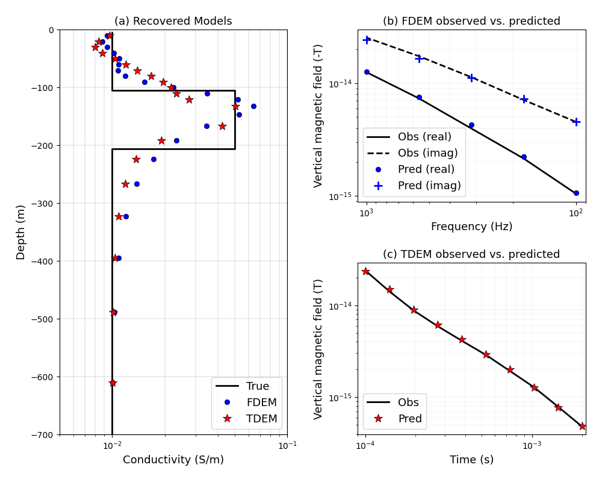

Note
Click here to download the full example code
Heagy et al., 2017 1D FDEM and TDEM inversions¶
Here, we perform a 1D inversion using both the frequency and time domain codes. The forward simulations are conducted on a cylindrically symmetric mesh. The source is a point magnetic dipole source.
This example is used in the paper
Lindsey J. Heagy, Rowan Cockett, Seogi Kang, Gudni K. Rosenkjaer, Douglas W. Oldenburg, A framework for simulation and inversion in electromagnetics, Computers & Geosciences, Volume 107, 2017, Pages 1-19, ISSN 0098-3004, http://dx.doi.org/10.1016/j.cageo.2017.06.018.
This example is on figshare: https://doi.org/10.6084/m9.figshare.5035175
This example was updated for SimPEG 0.14.0 on January 31st, 2020 by Joseph Capriotti
Out:
min skin depth = 158.11388300841895 max skin depth = 500.0
max x 1267.687908603637 min z -1242.6879086036365 max z 1242.687908603637
SimPEG.InvProblem will set Regularization.mref to m0.
SimPEG.InvProblem is setting bfgsH0 to the inverse of the eval2Deriv.
***Done using same Solver and solverOpts as the problem***
model has any nan: 0
============================ Inexact Gauss Newton ============================
# beta phi_d phi_m f |proj(x-g)-x| LS Comment
-----------------------------------------------------------------------------
x0 has any nan: 0
0 1.56e+01 7.90e+02 0.00e+00 7.90e+02 5.69e+02 0
1 1.56e+01 1.33e+02 7.38e+00 2.48e+02 4.31e+02 0
2 1.56e+01 8.29e+00 4.88e+00 8.46e+01 3.29e+01 0
3 3.91e+00 8.69e+00 4.35e+00 2.57e+01 2.90e+01 0 Skip BFGS
------------------------- STOP! -------------------------
1 : |fc-fOld| = 0.0000e+00 <= tolF*(1+|f0|) = 7.9079e+01
1 : |xc-x_last| = 3.7064e-01 <= tolX*(1+|x0|) = 2.4026e+00
0 : |proj(x-g)-x| = 2.9032e+01 <= tolG = 1.0000e-01
0 : |proj(x-g)-x| = 2.9032e+01 <= 1e3*eps = 1.0000e-02
0 : maxIter = 20 <= iter = 4
------------------------- DONE! -------------------------
min diffusion distance 114.18394340269788 max diffusion distance 510.64611877484225
SimPEG.InvProblem will set Regularization.mref to m0.
SimPEG.InvProblem is setting bfgsH0 to the inverse of the eval2Deriv.
***Done using same Solver and solverOpts as the problem***
model has any nan: 0
============================ Inexact Gauss Newton ============================
# beta phi_d phi_m f |proj(x-g)-x| LS Comment
-----------------------------------------------------------------------------
x0 has any nan: 0
0 1.25e+01 1.66e+03 0.00e+00 1.66e+03 7.02e+02 0
1 1.25e+01 1.73e+02 3.38e+00 2.15e+02 3.52e+02 1
2 1.25e+01 2.13e+01 5.19e+00 8.59e+01 5.30e+01 0 Skip BFGS
3 3.11e+00 5.81e+00 5.09e+00 2.16e+01 1.61e+01 0
------------------------- STOP! -------------------------
1 : |fc-fOld| = 0.0000e+00 <= tolF*(1+|f0|) = 1.6643e+02
1 : |xc-x_last| = 4.6863e-01 <= tolX*(1+|x0|) = 2.4026e+00
0 : |proj(x-g)-x| = 1.6088e+01 <= tolG = 1.0000e-01
0 : |proj(x-g)-x| = 1.6088e+01 <= 1e3*eps = 1.0000e-02
0 : maxIter = 20 <= iter = 4
------------------------- DONE! -------------------------
import discretize
from SimPEG import (
maps,
utils,
data_misfit,
regularization,
optimization,
inversion,
inverse_problem,
directives,
)
import numpy as np
from SimPEG.electromagnetics import frequency_domain as FDEM, time_domain as TDEM, mu_0
import matplotlib.pyplot as plt
import matplotlib
try:
from pymatsolver import Pardiso as Solver
except ImportError:
from SimPEG import SolverLU as Solver
def run(plotIt=True, saveFig=False):
# Set up cylindrically symmeric mesh
cs, ncx, ncz, npad = 10.0, 15, 25, 13 # padded cyl mesh
hx = [(cs, ncx), (cs, npad, 1.3)]
hz = [(cs, npad, -1.3), (cs, ncz), (cs, npad, 1.3)]
mesh = discretize.CylMesh([hx, 1, hz], "00C")
# Conductivity model
layerz = np.r_[-200.0, -100.0]
layer = (mesh.vectorCCz >= layerz[0]) & (mesh.vectorCCz <= layerz[1])
active = mesh.vectorCCz < 0.0
sig_half = 1e-2 # Half-space conductivity
sig_air = 1e-8 # Air conductivity
sig_layer = 5e-2 # Layer conductivity
sigma = np.ones(mesh.nCz) * sig_air
sigma[active] = sig_half
sigma[layer] = sig_layer
# Mapping
actMap = maps.InjectActiveCells(mesh, active, np.log(1e-8), nC=mesh.nCz)
mapping = maps.ExpMap(mesh) * maps.SurjectVertical1D(mesh) * actMap
mtrue = np.log(sigma[active])
# ----- FDEM problem & survey ----- #
rxlocs = utils.ndgrid([np.r_[50.0], np.r_[0], np.r_[0.0]])
bzr = FDEM.Rx.PointMagneticFluxDensitySecondary(rxlocs, "z", "real")
bzi = FDEM.Rx.PointMagneticFluxDensitySecondary(rxlocs, "z", "imag")
freqs = np.logspace(2, 3, 5)
srcLoc = np.array([0.0, 0.0, 0.0])
print(
"min skin depth = ",
500.0 / np.sqrt(freqs.max() * sig_half),
"max skin depth = ",
500.0 / np.sqrt(freqs.min() * sig_half),
)
print(
"max x ",
mesh.vectorCCx.max(),
"min z ",
mesh.vectorCCz.min(),
"max z ",
mesh.vectorCCz.max(),
)
source_list = [
FDEM.Src.MagDipole([bzr, bzi], freq, srcLoc, orientation="Z") for freq in freqs
]
surveyFD = FDEM.Survey(source_list)
prbFD = FDEM.Simulation3DMagneticFluxDensity(
mesh, survey=surveyFD, sigmaMap=mapping, solver=Solver
)
rel_err = 0.03
dataFD = prbFD.make_synthetic_data(mtrue, relative_error=rel_err, add_noise=True)
dataFD.noise_floor = np.linalg.norm(dataFD.dclean) * 1e-5
# FDEM inversion
np.random.seed(1)
dmisfit = data_misfit.L2DataMisfit(simulation=prbFD, data=dataFD)
regMesh = discretize.TensorMesh([mesh.hz[mapping.maps[-1].indActive]])
reg = regularization.Simple(regMesh)
opt = optimization.InexactGaussNewton(maxIterCG=10)
invProb = inverse_problem.BaseInvProblem(dmisfit, reg, opt)
# Inversion Directives
beta = directives.BetaSchedule(coolingFactor=4, coolingRate=3)
betaest = directives.BetaEstimate_ByEig(beta0_ratio=1.0, seed=518936)
target = directives.TargetMisfit()
directiveList = [beta, betaest, target]
inv = inversion.BaseInversion(invProb, directiveList=directiveList)
m0 = np.log(np.ones(mtrue.size) * sig_half)
reg.alpha_s = 5e-1
reg.alpha_x = 1.0
prbFD.counter = opt.counter = utils.Counter()
opt.remember("xc")
moptFD = inv.run(m0)
# TDEM problem
times = np.logspace(-4, np.log10(2e-3), 10)
print(
"min diffusion distance ",
1.28 * np.sqrt(times.min() / (sig_half * mu_0)),
"max diffusion distance ",
1.28 * np.sqrt(times.max() / (sig_half * mu_0)),
)
rx = TDEM.Rx.PointMagneticFluxDensity(rxlocs, times, "z")
src = TDEM.Src.MagDipole(
[rx],
waveform=TDEM.Src.StepOffWaveform(),
location=srcLoc, # same src location as FDEM problem
)
surveyTD = TDEM.Survey([src])
prbTD = TDEM.Simulation3DMagneticFluxDensity(
mesh, survey=surveyTD, sigmaMap=mapping, solver=Solver
)
prbTD.time_steps = [(5e-5, 10), (1e-4, 10), (5e-4, 10)]
rel_err = 0.03
dataTD = prbTD.make_synthetic_data(mtrue, relative_error=rel_err, add_noise=True)
dataTD.noise_floor = np.linalg.norm(dataTD.dclean) * 1e-5
# TDEM inversion
dmisfit = data_misfit.L2DataMisfit(simulation=prbTD, data=dataTD)
regMesh = discretize.TensorMesh([mesh.hz[mapping.maps[-1].indActive]])
reg = regularization.Simple(regMesh)
opt = optimization.InexactGaussNewton(maxIterCG=10)
invProb = inverse_problem.BaseInvProblem(dmisfit, reg, opt)
# directives
beta = directives.BetaSchedule(coolingFactor=4, coolingRate=3)
betaest = directives.BetaEstimate_ByEig(beta0_ratio=1.0, seed=518936)
target = directives.TargetMisfit()
directiveList = [beta, betaest, target]
inv = inversion.BaseInversion(invProb, directiveList=directiveList)
m0 = np.log(np.ones(mtrue.size) * sig_half)
reg.alpha_s = 5e-1
reg.alpha_x = 1.0
prbTD.counter = opt.counter = utils.Counter()
opt.remember("xc")
moptTD = inv.run(m0)
# Plot the results
if plotIt:
plt.figure(figsize=(10, 8))
ax0 = plt.subplot2grid((2, 2), (0, 0), rowspan=2)
ax1 = plt.subplot2grid((2, 2), (0, 1))
ax2 = plt.subplot2grid((2, 2), (1, 1))
fs = 13 # fontsize
matplotlib.rcParams["font.size"] = fs
# Plot the model
# z_true = np.repeat(mesh.vectorCCz[active][1:], 2, axis=0)
# z_true = np.r_[mesh.vectorCCz[active][0], z_true, mesh.vectorCCz[active][-1]]
activeN = mesh.vectorNz <= 0.0 + cs / 2.0
z_true = np.repeat(mesh.vectorNz[activeN][1:-1], 2, axis=0)
z_true = np.r_[mesh.vectorNz[activeN][0], z_true, mesh.vectorNz[activeN][-1]]
sigma_true = np.repeat(sigma[active], 2, axis=0)
ax0.semilogx(sigma_true, z_true, "k-", lw=2, label="True")
ax0.semilogx(
np.exp(moptFD),
mesh.vectorCCz[active],
"bo",
ms=6,
markeredgecolor="k",
markeredgewidth=0.5,
label="FDEM",
)
ax0.semilogx(
np.exp(moptTD),
mesh.vectorCCz[active],
"r*",
ms=10,
markeredgecolor="k",
markeredgewidth=0.5,
label="TDEM",
)
ax0.set_ylim(-700, 0)
ax0.set_xlim(5e-3, 1e-1)
ax0.set_xlabel("Conductivity (S/m)", fontsize=fs)
ax0.set_ylabel("Depth (m)", fontsize=fs)
ax0.grid(which="both", color="k", alpha=0.5, linestyle="-", linewidth=0.2)
ax0.legend(fontsize=fs, loc=4)
# plot the data misfits - negative b/c we choose positive to be in the
# direction of primary
ax1.plot(freqs, -dataFD.dobs[::2], "k-", lw=2, label="Obs (real)")
ax1.plot(freqs, -dataFD.dobs[1::2], "k--", lw=2, label="Obs (imag)")
dpredFD = prbFD.dpred(moptTD)
ax1.loglog(
freqs,
-dpredFD[::2],
"bo",
ms=6,
markeredgecolor="k",
markeredgewidth=0.5,
label="Pred (real)",
)
ax1.loglog(
freqs, -dpredFD[1::2], "b+", ms=10, markeredgewidth=2.0, label="Pred (imag)"
)
ax2.loglog(times, dataTD.dobs, "k-", lw=2, label="Obs")
ax2.loglog(
times,
prbTD.dpred(moptTD),
"r*",
ms=10,
markeredgecolor="k",
markeredgewidth=0.5,
label="Pred",
)
ax2.set_xlim(times.min() - 1e-5, times.max() + 1e-4)
# Labels, gridlines, etc
ax2.grid(which="both", alpha=0.5, linestyle="-", linewidth=0.2)
ax1.grid(which="both", alpha=0.5, linestyle="-", linewidth=0.2)
ax1.set_xlabel("Frequency (Hz)", fontsize=fs)
ax1.set_ylabel("Vertical magnetic field (-T)", fontsize=fs)
ax2.set_xlabel("Time (s)", fontsize=fs)
ax2.set_ylabel("Vertical magnetic field (T)", fontsize=fs)
ax2.legend(fontsize=fs, loc=3)
ax1.legend(fontsize=fs, loc=3)
ax1.set_xlim(freqs.max() + 1e2, freqs.min() - 1e1)
ax0.set_title("(a) Recovered Models", fontsize=fs)
ax1.set_title("(b) FDEM observed vs. predicted", fontsize=fs)
ax2.set_title("(c) TDEM observed vs. predicted", fontsize=fs)
plt.tight_layout(pad=1.5)
if saveFig is True:
plt.savefig("example1.png", dpi=600)
if __name__ == "__main__":
run(plotIt=True, saveFig=True)
plt.show()
Total running time of the script: ( 0 minutes 21.316 seconds)
Estimated memory usage: 9 MB